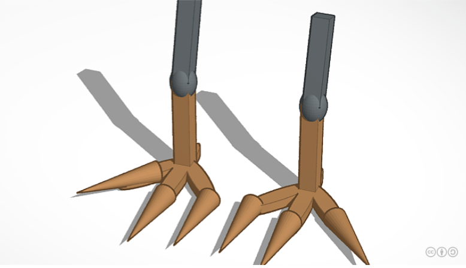

This is my week 1 blog. In this weeek we talked and learned about engineering class. We also got the syllabus.
This is my week 2 blog. In this week we learned how to work github and awsacademy. We also played a fun little challenge with marbles. Where we had 10 half cut pvc pipes and had to move the marble all the way to a bucket. The class was split in half and raced to see who could get the marble into the bucket first. The other group got their marble into the bucket first but we soon after got it in too. You had to make it into the bucket twice with two different marbles. My group made the second marble before the other group and won this challange.

This is my week 3 blog. In this week we finished up our Rube Goldberg tinkercad model and worked on Challenge #3. We also got into our groups to choose which machine we thought was the best. We went with Conner's machine because it looked good and fairly easy to build. In the challenge we drew an E and the measurements we wanted for the E. After we drew the measurements we gave the E to someone next to us. I gave it to the person behind me and he gave me his. I then drew out his E and he drew mine. After you finished drawing then you had to cut it out and turn it in. Mine wasn't perfect but it wasn't bad.

This is my week 4 blog. In this week we began building our real life Rube Goldberg machine and did Challenge #4. We are almost done with our Rube Goldberg machine we just need to finish our pulley. We built the pillars and I brought the paper towel rolls we are going to use. Next week we will finish it and start testing. For the challenge we had to make a little paper boat and see if it could float for 5 minutes. You could've also added weight to the boats if you wanted. We added 22 grams of weight and our boat floated for the 5 minutes.

This is my week 5 blog. In this week we finished up our Rube Goldberg machine and tested them. We also had to do our english MAP test. We tested many times until we finally found a solution and popped the balloon. This week we had no challenge because we wanted finish up our projects and test them. Everyone finished and popped their balloons. We visisted the other engineering class to see their machines but I was suprised to see that their machines were a lot more complex and different. Some of them were using marbles and mazes it was very different compared to ours.

This is my week 6 blog. In this week we started learning about computer engineering. We had a zoom with a computer engineerist on Wednesday and began dissecting a old computer. It was pretty difficult for most of us and we finished dissecting on Friday. I don't think me and Leo put it back together right because we still had a lot of screws remaining after it was all together. Also everyone was bugging and making fun of us so that didn't help. It was fun and funny though.
This is my week 7 blog. In this week we learned about bio engineering and we had Challenge #5. Bio engineering is about making prostetics for humans and animals. I made a prostetic leg for a bird called the Shoebill stork. I made the prostetic leg on tinkercad. The challenge for this week was writing down instructions on how to make a peanut butter and jelly sandwhich. It was kind of annoying because you had to be very very specific but it was still fun. Sadly we couldn't eat them though because of sickness' and stuff. The highest paying engineering job is a systems engieering. The salary is between 90k-180k.
This is my week 8 blog. In this week we learned about aerospace engineering and had a paper airplane challenge. Aerospace engineering is about people who design or build aircraft, missiles systems for national defense, and spacecraft. We also began brainstorming ideas for our bottle rocket project on paper and tinkercad. For the airplane challenge I just made a regular paper plane but I think a paper ball was better for it because paper balls did much better. We also began making a thing called a BOM which is the materials you need and the quantity of it. For my bottle rocket I won't need much proabbly just construction paper, regular paper, tape, scissors, and a 2 liter plastic bottle.
This is my week 9 blog. In This week we began building our bottle rockets in groups. My group members were Conner, Leo, Theo, and me. We were expecting our rocket to fly and glide pretty well on the day of the launch because we test threw the rocket many times. It glided on most throws but Theo kept messing up our tip so we had to keep making new ones. On Friday we launched our rocket, we were very disappointed because it just spiralled in place. The best launch was someone from the other engineering class but I don't know their name. We even used sparkling water to give it extra speed but it did nothing and was a waste money.
This is my week 10 blog. In this week we learned about environmental engineering. We did an experiment with bottles, sand, big rocks, small rocks, cotten, and dirty water. The experiment was to see how clean the water was after it went through all the materials. We did the expiremnt twice the first time it wasn't good but the second time we had the cleaneast water out of everyone. I am not interested in environmental engineering but I do care for the environment.
This is my week 11 blog. In this week we started learning about electronical engineering. It is very confusing and tech like. We made tinkercad breadboard things and next week we will make one in real life. We first used a 3 something battery to charge our breadboard but then changed it to a 9V battery and made some LED lights light up. You could change how bright the LED was by changing the amount of omhs on the resistors. We put the omhs to 300 on the resistor. If you put it too high or too low the light will blow up.

This is my week 12 blog. In this week we used a real life bread board. We connected a battery to one of our chromebooks and connected the battery to the breadboard. It was pretty confusing because it just told us what to make not what to do or how it looked. When I was stuck I just looked at the people in frot of me and copied what they were doing.
This is my week 13 blog. In this week we only did a challenge. For the challenge we did a lot of counting and math. Taking a math class for 180 days and each class was 50 minutes that would equal 150 hours. Which is 6.25 days which is half the time it would take to count to 1 million. Counting to 1 million without stopping would take about 11-12 days which is about 277 hours.
This is my Semester 2 week 1 blog. In this week we learned about Business engineering. We watched a few shark tank videos and learned how to pitch our product. Me groups product was called "Sleepy Daddy". It was a sleeping bag you use on your bed that clamped down so it wouldn't fall off. I think that it was a pretty good product just that the sharks didn't understand and get it. We requested $100,000 for 20% stake.